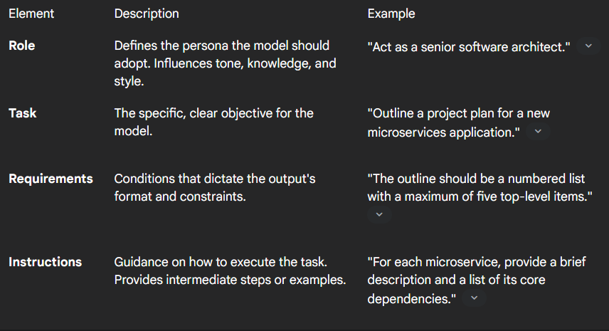
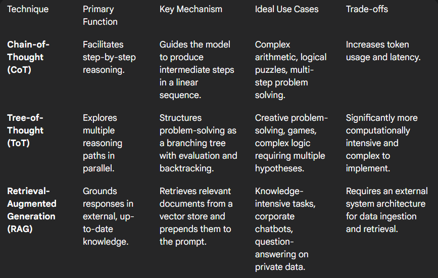

5. Prompt engineering - vibe coding
AI Agenter og automatisering
Agenda
- What is Prompt Engineering?
- Prompt vs Traditional Software Engineering
- The Iterative Process
- AI Agent Prompt Structure
- Prompting Techniques
- Security
- Vibe coding
- Exercise
Assigment
- What is an LLM?
- Lots of data for training (human feedback)
- Probabilities - no “actual knowledge”
- Hallucinations - “Kritisk sans” - “outsource tænkning”
- Tokens - Price
- Sustanability - Compute requirements
- Bias
- Always on
- Training of LLMs
What is Prompt Engineering?
Prompt engineering is the practice of carefully designing, crafting, and refining the input text (prompts) given to generative AI models to elicit the most accurate, relevant, and desired output.
Prompt vs. Traditional Software Engineering
Prompt Engineering
- Based on natural language
- Behavioral steering
- Probabilistic output
- Iterative refinement
Software Engineering
- Based on programming languages
- Deterministic execution
- Compilation / interpretation
- Structured logic
An Iterative Process
Prompt engineering is fundamentally experimental.
- A single prompt rarely yields optimal results
- Refinement is required
- Learning happens through iteration
Think Like a Developer
Traditional Development
- Write
- Compile
- Test
- Refactor
Prompt Engineering
- Write initial prompt
- Review model response
- Adjust prompt
- Repeat
Engineering?
Prompt engineering is engineering.
- Debugging
- Version control
- Commits & diffs
- Continuous improvement
- Tools & frameworks
Prompting AI Agents
There is no single correct way.
- LLMs differ
- Training differs
- Model sizes differ
- Tasks differ
- Design depends on context.
Structure for AI Agent Prompts
- Role
- Task
- Requirements
- Instructions
Role
Defines the persona the model should adopt.
Influences tone, knowledge, and style.
“Act as a senior software architect.”
Task
The clear objective.
“Outline a project plan for a new microservices application.”
Requirements
Output constraints and formatting rules.
“The outline should be a numbered list with a maximum of five top-level items.”
Instructions
Execution guidance.
“For each microservice, provide a brief description and a list of its core dependencies.”
Prompt (User Message)
- The prompt or the user message is the input to the AI agent
- This is the request to the agent
- It does not have to be a human
- It can be other systems and even other agents

System message
- System messages (also called System Prompts) define how the model should behave.
- This is where you can get the agent to talk like a pirate – or something more useful

Three Layered System Message
- Identity
- “You are a helpful assistant.”
- Developer Control
- “Always respond in valid JSON.”
- Guardrails
- “If unsure, ask clarifying questions.”
- Even if technically one message — conceptually, they are different layers.
Why Separate It Conceptually?
- When prompts grow:
- Harder to debug
- Harder to version
- Harder to evaluate
- Harder to reuse across workflows
- Harder to debug
- Think in software architecture terms:
- Separation of concerns
- Layered architecture
- Maintainability
- Modularity
- Separation of concerns
Example – Poor Prompt Design
You are helpful.
Write clearly and professionally.
Well Structured Prompt Design - System Message - One message – Three Layers
You are an expert technical analyst writing for a professional audience.
You must always respond in valid JSON matching this schema:
{
“title”: string,
“summary”: string,
“risk_level”: “low” | “medium” | “high”
}
If required information is missing, ask a clarifying question instead of guessing. Never fabricate data.
A Good Prompt

Discussion
- Which parts belong to:
- Identity?
- Developer control?
- Guardrails?
- User intent?
Prompt Brittleness
- Large Language Models can be surprisingly sensitive.
- Small wording changes → large output differences
- Hidden assumptions inside prompts
- Sensitivity to tone, framing, and constraints
- Implicit bias introduced by phrasing
- Small wording changes → large output differences
- This is called prompt brittleness (skrøbelighed).
Mini Exercise
- Original prompt:
- Explain why remote work improves productivity.
- Now change one word:
- Explain whether remote work improves productivity.
- Compare the outputs.
- What changed?
Evaluation & Prompt Testing
- Prompt engineering is not guessing.
- It is an engineering discipline.
- Prompt Evaluation
- Define clear success criteria
- Test against multiple inputs
- Compare outputs systematically
- Identify failure cases
- Define clear success criteria
- A structured approach
Engineering Practices
Regression test prompts
Version control prompts
Track prompt changes over time
Measure quality improvements
Treat prompts like testable software components.
What Does “Success” Mean?
- Before optimizing a prompt, define:
- Accuracy
- Completeness
- Format correctness
- Safety compliance
- Cost (tokens)
- Latency
- Accuracy
- If you cannot measure it, you cannot improve it.
Quick Exercise
- Given the newsletter generation prompt:
- What are the success criteria?
- How would you test it?
- What would you regression test?
- Discuss in pairs.
Hallucinations & Grounding
- LLMs do not “know” — they predict the most probable next token.
- Hallucination Types
- Fabricated facts
- False citations
- Invented statistics
- Overconfident certainty
- Even when the model sounds certain, it may be wrong.
- Fabricated facts
Grounding the Model
- To reduce hallucinations:
- Retrieval-Augmented Generation (RAG)
- External databases
- Verified APIs
- Tool-based answers
- Clear uncertainty instructions
- Retrieval-Augmented Generation (RAG)
- The more critical the task the more grounding is required.
Prompt Compression
- As prompts grow, costs grow.
- When Prompts Become Large
- Token cost increases
- Latency increases
- Context window pressure increases
- Noise increases
- Token cost increases
- Long prompts are not always better prompts.
Prompt Optimization
- Remove redundancy
- Reduce verbose instructions
- Externalize static rules
- Move knowledge to RAG instead of inline context
- Prompt engineering eventually becomes prompt optimization.
Types of Prompt Engineering
- Zero-Shot
- Few-Shot
- Chain-of-Thought
- Tree-of-Thought
- RAG
Zero-Shot Prompting
- A technique where an AI model is instructed to perform a task without being given any example inputs or outputs
- Most basic prompt
- Uses pre-trained knowledge only
- Baseline approach
- ⚠️ Limited by model knowledge
Few-Shot Prompting
- an AI prompting technique where a model is provided with a few examples (typically 2-10) within the prompt to illustrate a desired task or format before asking it to generate a response for a new, unseen input
- Add representative examples inside the prompt.
- Demonstrates format
- Demonstrates reasoning pattern
- Improves reliability
- ⚠️ Too many examples can reduce clarity
Chain-of-Thought (CoT)
- a prompting technique for LLMs that improves reasoning accuracy by breaking complex problems into intermediate, logical, step-by-step steps before arriving at a final answe
- “Let’s think this through step by step.”
- Benefits:
- Improved reasoning
- Transparent logic
- Easier debugging
- More trustworthy output
- Improved reasoning
Tree-of-Thought (ToT)
an advanced AI prompting framework that improves LLM reasoning by breaking problems into, exploring, and evaluating multiple, branching, and, and backtracking
Explores multiple reasoning paths in parallel.
- Structured like a decision tree
- Brainstorms alternatives
- Can backtrack
- Useful for complex planning
- Structured like a decision tree
Retrieval-Augmented Generation (RAG)
- an AI framework that improves LLM accuracy and relevance by fetching data from trusted, external knowledge bases before generating a response
- Addresses static training data limitation.
- Grounds output in external knowledge
- Enables up-to-date responses
- Supports domain-specific expertise
- Grounds output in external knowledge
Overview of technuquies

Use LLMs to Build Agents
- Combine prompts with tools
- Create workflows
- Orchestrate multi-step reasoning
- Automate processes
Temperature
- Temperature is a key parameter that controls the randomness of an LLM’s output.
- It’s a value, typically between 0 and 2, that you can set when you make a request to the model.
- Think of it as a dial for creativity.
- Low Temperature (e.g., 0.1 to 0.5): With a low temperature, the model becomes more deterministic and conservative.
- High Temperature (e.g., 0.8 to 1.5): A higher temperature increases the chances of the model selecting less likely tokens.
More temperature
- Not True Creativity : While a higher temperature can lead to more novel-sounding outputs, it’s not the same as human creativity. It’s simply increasing the mathematical randomness of the word selection.[10][15] The model’s inherent creativity is more tied to its architecture and training data.[15]
- Risk of Incoherence : Pushing the temperature too high can result in nonsensical or “hallucinated” outputs that don’t make sense.[7]
- Finding the Balance : The right temperature setting depends entirely on the task at hand. For a reliable AI agent performing a predictable task, a low temperature is generally preferred.[10] For an agent designed to brainstorm or explore possibilities, a higher temperature might be more appropriate.[9]
Top-K Sampling
- Definition: Filters the probability distribution to keep only the top k most likely tokens.
- Process:
- Sort all possible next words by their probability.
- Keep only the top k options (e.g., if k=40, only the 40 most likely words are considered).
- Redistribute the probability mass among these k tokens.
- Randomly sample the next word from this restricted set.
- Impact:
- Pros: Very simple and prevents the model from picking completely nonsensical “long-tail” words.
- Cons: It is not adaptive. If the model is very confident (one word is 99%), it still looks at the other 39. If the model is uncertain, it might cut off valid, high-quality choices.
Top-P (Nucleus) Sampling
- Definition: A dynamic approach that selects the smallest set of tokens whose cumulative probability exceeds a threshold p.
- Process:
- Sort all possible next words by probability.
- Add words to a “nucleus” one by one until their combined probability reaches p (e.g., p=0.9 or 90%).
- The number of words in the set grows or shrinks based on the model’s confidence.
- Sample the next word only from this “nucleus.”
- Impact:
- Pros: Adaptive. When the model is confident, the set is small (maybe 1 word); when it’s confused, the set is large.
- Cons: Harder to predict exactly how many options the model will have at any given step.
- Often considered superior to Top-K for maintaining a natural and creative “flow” in conversation.
Security
Prompt Injection
- An attacker crafts a deceptive prompt to manipulate output.
- Overrides instructions
- Direct injection
- Indirect injection (hidden content)
- Overrides instructions
Jailbreaking
- Attempts to bypass safety guardrails.
- Overrides ethical constraints
- Tries to force disallowed responses
- Overrides ethical constraints
Exercise
- Improve your latest AI agent:
- Structure system + user messages
- Iterate prompts
- Evaluate improvement
- Measure output quality
- 📅 Working version by next week
- Structure system + user messages
Extend the Newsletter
- Use agents (n8n)
- Add Human-in-the-Loop
- Multi-agent critique loop
- Long-term memory (database)
- Add images
Production Ready?
- Imagine this newsletter is sent to 50,000 subscribers.
- Ask yourself:
- What could go wrong?
- How would you test it?
- How would you detect failures?
- How would you prevent hallucinations?
- How would you version your prompts?
- Design improvements accordingly.
Multi-Agent Example
- Agent A generates content
- Agent B critiques
- Feedback returned to Agent A
- Regenerate
- Repeat until quality threshold
Human-in-the-Loop (HITL)
- AI generates content.
- Human validates.
- AI assists —> it does not decide.
Why Use HITL?
Prevent hallucinations
Catch tone issues
Avoid reputational damage
Ensure legal compliance
Maintain quality control
AI speeds up work.
Humans remain accountable.
Designing Human-in-the-Loop
- Where do you insert the human?
- Before generation? (approve topic)
- After generation? (approve content)
- After evaluation? (approve final draft)
- Only if confidence score < threshold?
- Design the control point.
HITL Exercise
- Modify your newsletter workflow:
- Add a manual approval step
- Define what the human must check
- Define rejection criteria
- Define what happens if rejected
- How do you avoid infinite edit loops?
When Should Humans Be Required?
- Always?
- Only if:
- Confidence score < 0.8?
- Topic is sensitive?
- Temperature > 0.7?
- Claims include numbers?
- Design a policy.
Assignment
- Turn in
- Old newsletter prompt and
- Improved prompt
- Briefly explain why the prompt is improved (bullet points are fine)
“Vibe” coding
- Time to get a CLI up and running….🚀🚀
Exercise - CLI install
- Install Claude code, codex, gemini cli or Mistral Vibe
- We need it for next weeks class
- Test that it can read an MD file and follow instructions
- Find out what your token budget is